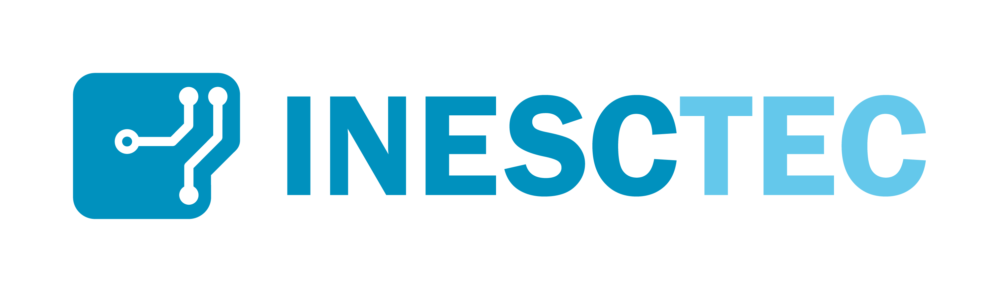
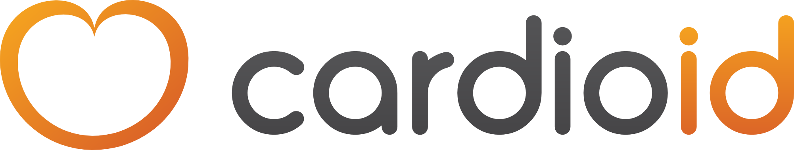
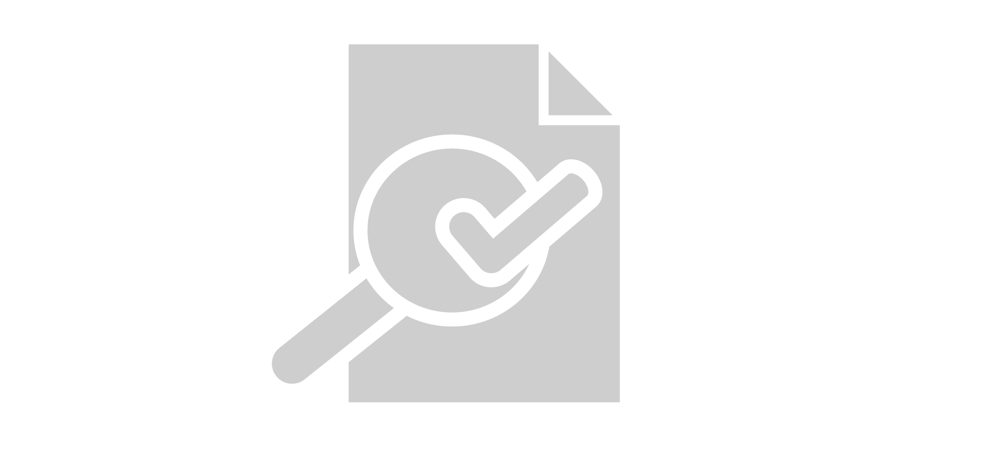
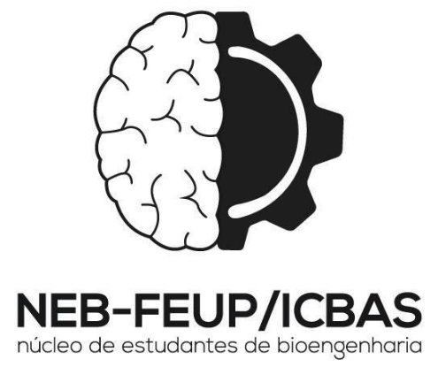
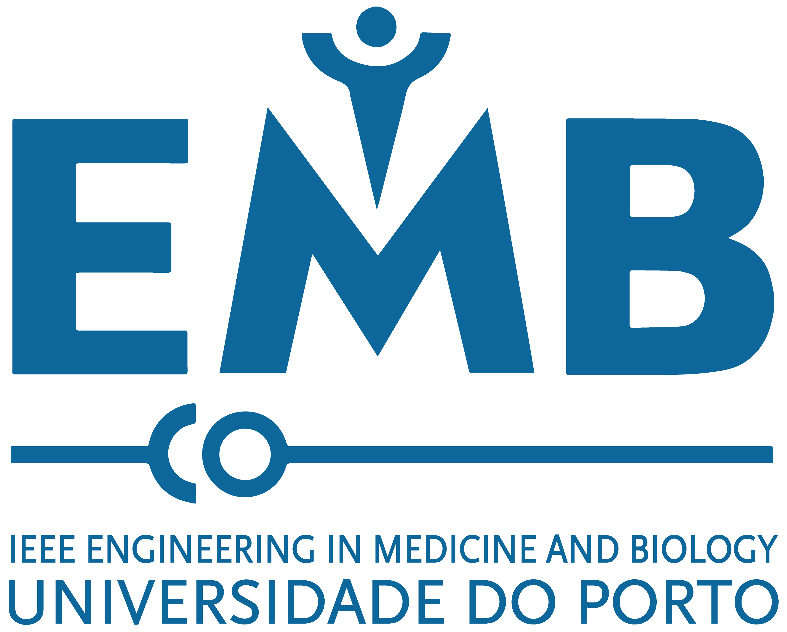
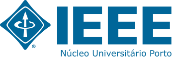

Professional Experience
Faculdade de Engenharia da Universidade do Porto
PhD Student(since Oct. 2018)
PhD studies in pattern recognition, signal processing, and image analysis, financed by the Portuguese Science and Technology Foundation (FCT).

Visual Computing and Machine Intelligence Group - INESC TEC
Research Assistant (since Oct. 2017)
Research in pattern recognition, signal processing, and image analysis.
Dept. Electrotechnical and Computer Engineering - FEUP
MSc Research Fellow (Aug. 2017 - Sep. 2018)
Research in pattern recognition, signal processing, and image analysis.

CardioID Technologies
Master Thesis Student (Sep. 2016 - Jul. 2017)
Research and development work in biometrics, signal processing, and machine learning.
Voluntary Activities

Student Academic Activities

NEB-FEUP/ICBAS
Communication and image team member (Nov. 2016 - Jun. 2017)
Development and maintenance of a new information system;
Development of the website for the 8th Symposium in Bioengineering.
Development of the website for the 8th Symposium in Bioengineering.

EMBS UP
Vice-Chair (Dec. 2015 - Jun. 2017)
Founding Member (Nov. 2015 - Jun. 2017)
Leading and coordinating activities and members (as part of the management);
Communication liaison between the NuIEEE UP and EMBS UP;
Fundraising support and IEEE promotion on the 7th Symposium on Bioengineering;
Participation on the IEEE madC '16 mobile app development programme.
Communication liaison between the NuIEEE UP and EMBS UP;
Fundraising support and IEEE promotion on the 7th Symposium on Bioengineering;
Participation on the IEEE madC '16 mobile app development programme.

NuIEEE UP
Member (Oct. 2015 - Jun. 2017)
Foundation and liaison with the EMBS UP chapter;
Organization and participation in FEUP Engineering Profession Week activities;
Promotion of IEEE to professionals at MES Portugal 2016 by Critical Manufacturing;
Promotion of IEEE to students at the 7th Symposium in Bioengineering.
Organization and participation in FEUP Engineering Profession Week activities;
Promotion of IEEE to professionals at MES Portugal 2016 by Critical Manufacturing;
Promotion of IEEE to students at the 7th Symposium in Bioengineering.

VILab
Student Researcher (Sep. 2015 - Apr. 2016)
Development of algorithms for biometric identification, liveness detection, and speaker recognition.
Societies & Associations
Ordem dos Engenheiros
Student Member (since 2017)
IEEE
Student Member (Oct. 2015 - Jun. 2017)
NEB-FEUP/ICBAS
Communication and image team member (Nov. 2016 - Jun. 2017)
Associate (Oct. 2014 - Jun. 2017)